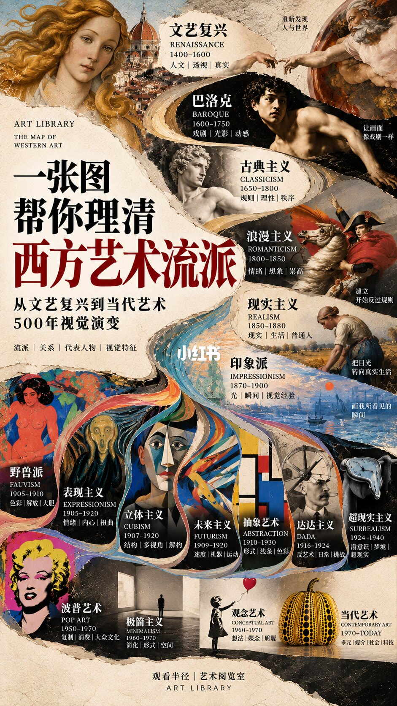
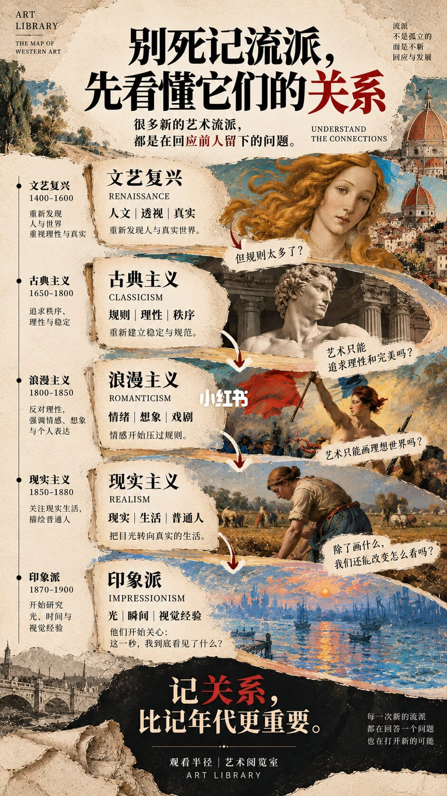
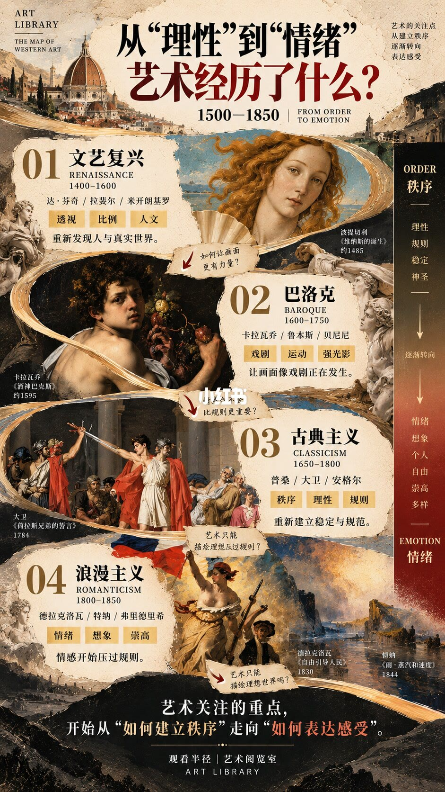
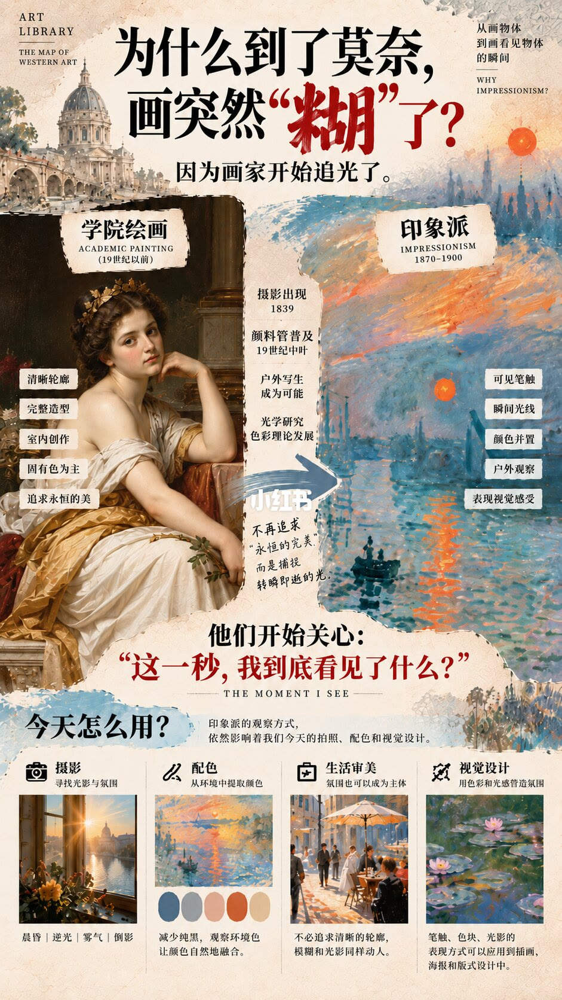
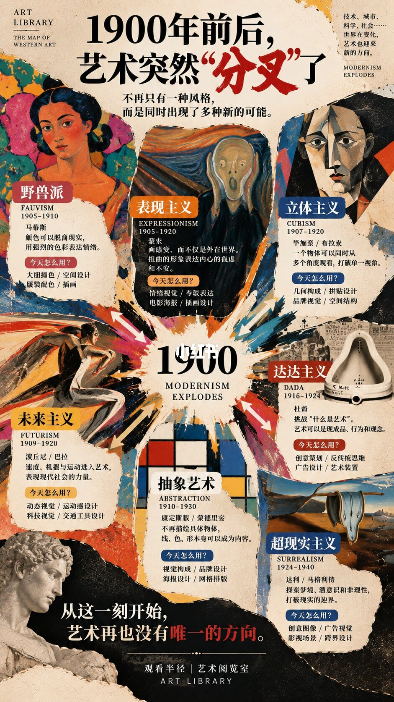
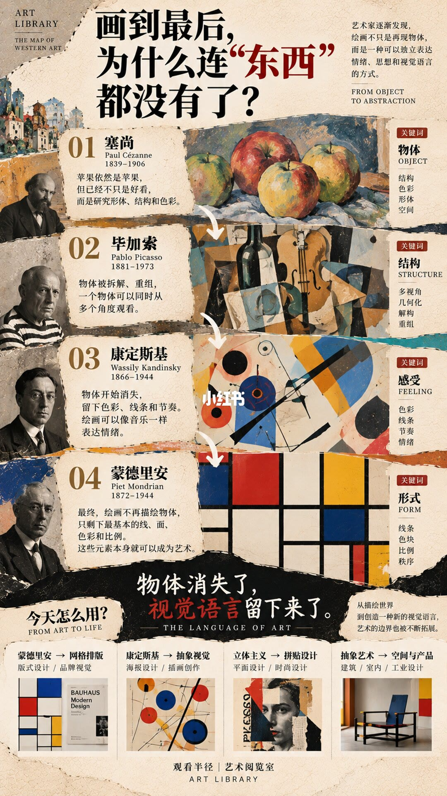
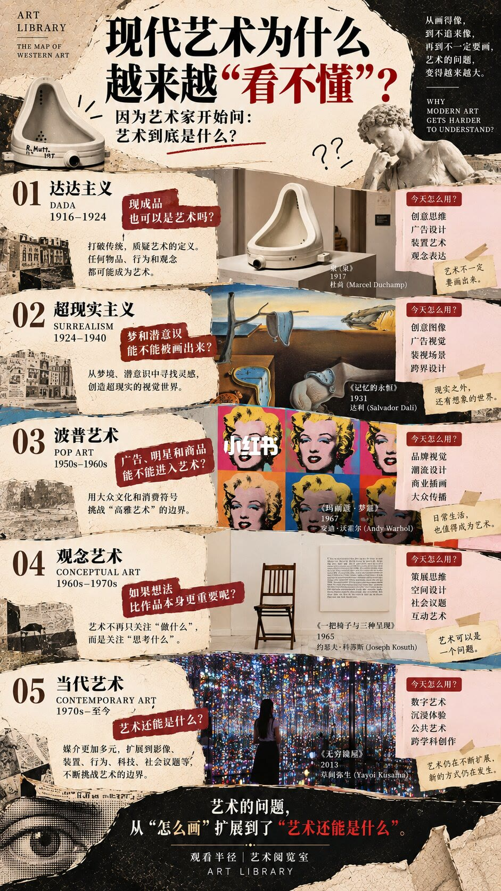
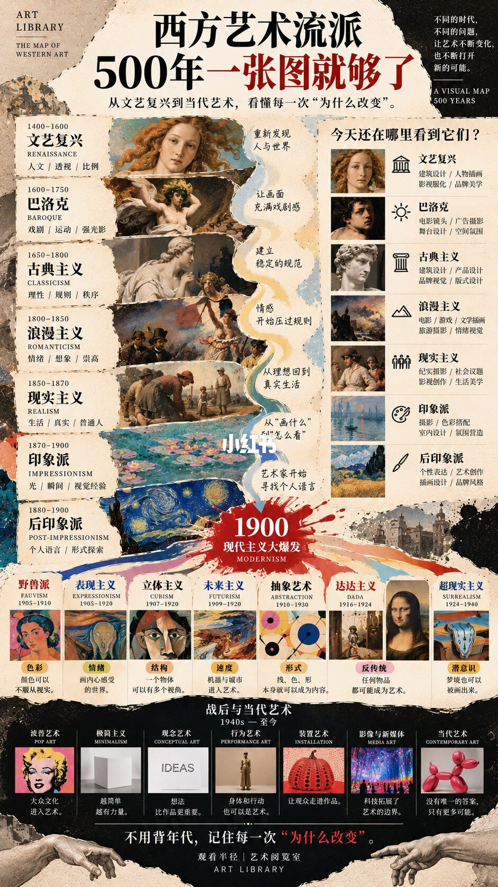

图文实录 · 小红书 · 观看半径
一张图，帮你理清500年西方艺术流派
作者要记的不是年代表，而是每一次「为什么改」：先建立秩序，再让情绪压过规则，接着去追光，然后把形体拆开，最后连「艺术是什么」也变成问题。
1/8
一张总图
封面从文艺复兴排到当代，大约十七条。文艺复兴写人文、透视、真实；巴洛克写戏剧、光影、动态；古典主义写规则、理性、秩序；浪漫主义写情绪、想象、崇高；现实主义写生活和普通人；印象派写光、瞬间、视觉经验。往下是野兽派、表现主义、立体主义、未来主义、抽象、达达、超现实、波普、极简、观念和当代。每格配一幅代表图像和关键词。年代是这张图的区间，互相有重叠。

2/8
每一种都在回答上一种
页题是别死记流派。文艺复兴重新看人和真实世界，接着问规则是不是太多。古典主义把稳定和规范再立起来，接着问艺术是不是只能追求理性和完美。浪漫主义让情绪压过规则，接着问是不是只能画理想世界。现实主义转向日常生活，接着问除了画什么，能不能改怎么看。印象派关心的是这一秒到底看见了什么。页底写：记关系比记年代重要。

3/8
从秩序转到情绪
1400–1850 被收成一条：文艺复兴的透视、比例、人文；巴洛克的戏剧、运动、强光影；古典主义把秩序和规则拉回来；浪漫主义的情绪、想象、崇高。右侧对照把「秩序」写成理性、规则、稳定，把「情绪」写成想象、个人、自由。结论是关注点从怎样建立秩序，转到怎样表达感受。

4/8
为什么到莫奈变「糊」
页题问莫奈为什么让画突然变糊，答案是画家开始追光。学院绘画被写成轮廓清楚、形体完整、室内完成、固有色、追求永恒。印象派被写成可见笔触、瞬间的光、颜色并置、户外观看。推动因素写了 1839 年摄影、便携颜料管，以及光学和色彩研究。下半页把这套看法接到今天：摄影找光和氛围，配色少用纯黑，生活场景里气氛本身可以是主体，笔触和色块可以进海报。

5/8
1900 年前后分叉
中心写现代主义炸开，不再只有一个方向。野兽派让颜色离开实物；表现主义画内心的扭曲；立体主义同时看多个角度；未来主义放进速度和机器；抽象让线、色、形自己成为内容；达达追问现成品能不能是艺术；超现实画梦和潜意识。页底写：从这一刻起，艺术不再有唯一方向。

6/8
物体消失以后还剩什么
四步：塞尚仍画苹果，但研究结构、颜色和空间；毕加索把物体拆开再重组；康定斯基留下颜色、线和节奏；蒙德里安只留线、面、色和比例。横幅写：物体消失了，视觉语言还在。下面把网格、抽象、拼贴接到版式、海报和产品。

7/8
看不懂，是因为问题变了
达达问现成品能不能是艺术，例子是杜尚的泉。超现实问梦能不能画。波普问广告、明星和商品能不能进艺术。观念艺术问想法是否比作品更重要，例子是科苏斯的《一把和三把椅子》。当代问艺术还可以是什么，例子包括草间弥生的无限镜屋。页底写：问题从「怎么画」扩成「艺术还可以是什么」。

8/8
一张可以带回展厅的地图
末页把前面收成一张总表，右侧接到建筑、电影、摄影、品牌和室内。1900 之后再列野兽派到超现实，底部黑底是波普、极简、观念、行为、装置、媒体艺术和当代。收束句是：不用背年代，记住每一次为什么改变。

汇总
先问它在反对谁
八页可以收成一条：秩序（文艺复兴、古典主义）被情绪（巴洛克、浪漫主义）冲开，现实主义把题材拉回生活，印象派改的是怎么看光，1900 年前后同时出现颜色、结构、速度、抽象、反艺术和梦，之后问题变成艺术还可以是什么。年代是图上的区间，彼此重叠，不能当成博物馆年表。代表作和「今天怎么用」是观看半径的对照，不是这些运动的全部。